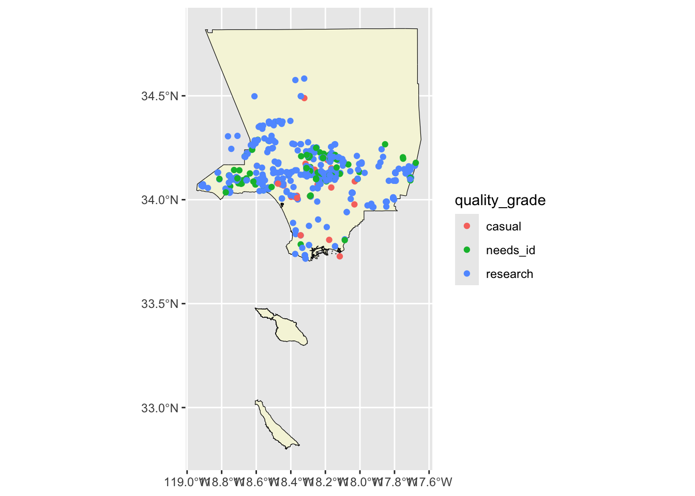
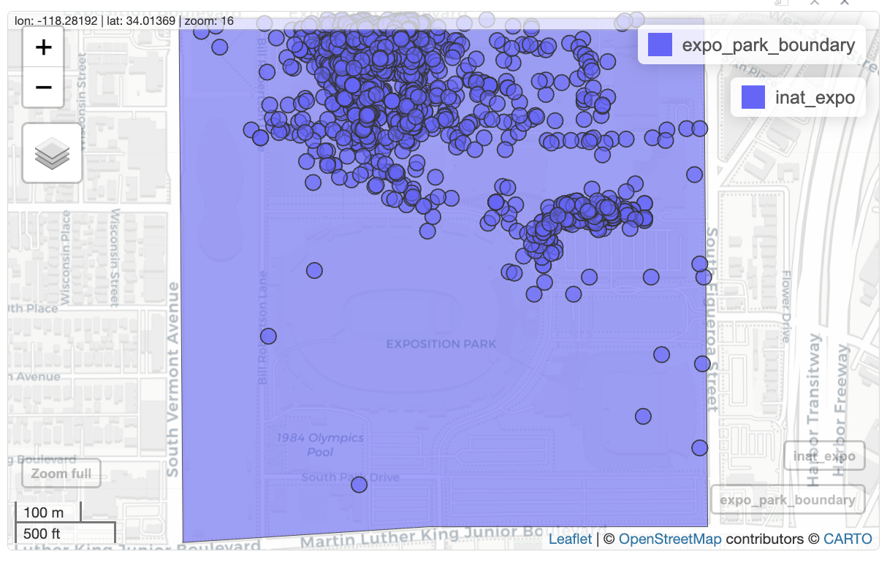

library(readr) # read and write tabular data
library(dplyr) # manipulate data
library(ggplot2) # create data visualizations
library(sf) # handle vector geospatial data
library(mapview) # create interactive maps
source('../scripts/map_utils.R')Creating maps
Questions
- How do we create maps using R?
Objectives
- Learn how to plot iNaturalist observations on a map.
- Learn how to create static maps with ggplot2.
- Learn how to create interactive maps with mapview.
Mapping iNaturalist data
iNaturalist data includes latitude and longitude information, which means we can put the observations on a map.
Main steps:
- Load iNaturalist data
- Add geometry column to iNaturalist data
- Use
filter(),select(),mutate(), andcount()to get the rows and columns we want - Create map
Loading R packages.
source('../scripts/map_utils.R') loads a script file with custom functions created for this workshop.
There is a bug with sf https://github.com/r-spatial/sf/issues/1762. This bit of code is fix for the bug.
sf_use_s2(FALSE)Spherical geometry (s2) switched offFirst, we need to read data from the CNC iNaturalist observation file.
inat_data <- read_csv('data/cleaned/cnc-los-angeles-observations.csv')We can use names() to see all the column names. “latitude” and “longitude” are the column names we need.
names(inat_data) [1] "id" "observed_on"
[3] "time_observed_at" "user_id"
[5] "user_login" "user_name"
[7] "created_at" "updated_at"
[9] "quality_grade" "license"
[11] "url" "image_url"
[13] "sound_url" "tag_list"
[15] "description" "captive_cultivated"
[17] "latitude" "longitude"
[19] "positional_accuracy" "public_positional_accuracy"
[21] "geoprivacy" "taxon_geoprivacy"
[23] "coordinates_obscured" "scientific_name"
[25] "common_name" "iconic_taxon_name"
[27] "taxon_id" "taxon_kingdom_name"
[29] "taxon_phylum_name" "taxon_class_name"
[31] "taxon_order_name" "taxon_family_name"
[33] "taxon_genus_name" "taxon_species_name"
[35] "taxon_subspecies_name" "threatened"
[37] "establishment_means" sf packages handles geospatial data. sf package uses a special type of data frame called sf object (special features) to store geospatial data.
st_as_sf() function from sf package will use the longitude and latitude values to add a geometry column, and convert a tibble or data.frame into sf object. sf will use the geometry column for geospatial data processing.
- We pass in longitude and latitude columns as a vector to
coordsargument. We must wrap longitude and latitude in quotes. crsargument sets the coordinate reference system (CRS). 4326 is the code for the EPSG:4326, a commonly used CRS.
inat_base_sf <- inat_data %>%
st_as_sf(coords = c("longitude", "latitude"), crs = 4326)We can use names() to show the column names. longitude and latitude columns were removed, and a geometry column was added.
names(inat_base_sf) [1] "id" "observed_on"
[3] "time_observed_at" "user_id"
[5] "user_login" "user_name"
[7] "created_at" "updated_at"
[9] "quality_grade" "license"
[11] "url" "image_url"
[13] "sound_url" "tag_list"
[15] "description" "captive_cultivated"
[17] "positional_accuracy" "public_positional_accuracy"
[19] "geoprivacy" "taxon_geoprivacy"
[21] "coordinates_obscured" "scientific_name"
[23] "common_name" "iconic_taxon_name"
[25] "taxon_id" "taxon_kingdom_name"
[27] "taxon_phylum_name" "taxon_class_name"
[29] "taxon_order_name" "taxon_family_name"
[31] "taxon_genus_name" "taxon_species_name"
[33] "taxon_subspecies_name" "threatened"
[35] "establishment_means" "geometry" If we look at the class for inat_base_sf, it shows sf object.
class(inat_base_sf)[1] "sf" "tbl_df" "tbl" "data.frame"st_crs() from sf returns the CRS for a sf object. Let’s use st_crs() to look at the CRS.
st_crs(inat_base_sf)Coordinate Reference System:
User input: EPSG:4326
wkt:
GEOGCRS["WGS 84",
ENSEMBLE["World Geodetic System 1984 ensemble",
MEMBER["World Geodetic System 1984 (Transit)"],
MEMBER["World Geodetic System 1984 (G730)"],
MEMBER["World Geodetic System 1984 (G873)"],
MEMBER["World Geodetic System 1984 (G1150)"],
MEMBER["World Geodetic System 1984 (G1674)"],
MEMBER["World Geodetic System 1984 (G1762)"],
MEMBER["World Geodetic System 1984 (G2139)"],
ELLIPSOID["WGS 84",6378137,298.257223563,
LENGTHUNIT["metre",1]],
ENSEMBLEACCURACY[2.0]],
PRIMEM["Greenwich",0,
ANGLEUNIT["degree",0.0174532925199433]],
CS[ellipsoidal,2],
AXIS["geodetic latitude (Lat)",north,
ORDER[1],
ANGLEUNIT["degree",0.0174532925199433]],
AXIS["geodetic longitude (Lon)",east,
ORDER[2],
ANGLEUNIT["degree",0.0174532925199433]],
USAGE[
SCOPE["Horizontal component of 3D system."],
AREA["World."],
BBOX[-90,-180,90,180]],
ID["EPSG",4326]]We use select() to pick which columns we want for the map.
inat_sf <- inat_base_sf %>%
select(user_login, common_name, scientific_name, observed_on, url, quality_grade) Use dim() to show the number of rows and columns. There are over 191K rows.
dim(inat_sf)[1] 191638 7Let’s get the observations for ‘Quercus agrifolia’ aka Coast Live Oak.
inat_oak_sf <- inat_sf %>%
filter(scientific_name == 'Quercus agrifolia')Use dim() to get number of observations. There is 711 rows.
dim(inat_oak_sf)[1] 711 7static map
ggplot2 is a package that allows you to create data visualizations from tabular data. ggplot2 is most commonly used to create charts, but it can also be used to create maps.
Let’s create a map for Coast Live Oak observations.
Call ggplot() to start a map. Then we use + to add a new layer to the map. ggplot2 has various geom_ functions to display data. geom_sf() uses the information in the geometry column to plot each row. We pass the iNaturalist data to geom_sf() using the data argument.
ggplot() +
geom_sf(data = inat_oak_sf) 
interactive map
We can use mapview package to create interactive maps where you can zoom in and out.
Let’s create interactive map for ‘Coast Live Oak’.
mapview(inat_oak_sf)
You can zoom in and out. When you click on layer button on the left, you can change base map and turn on/off layers. When you click on a map marker, all the fields that were passed into select() will be displayed in a popup. Clicking on the layer names in the lower right will zoom the map to show all objects in the layer.
Exercise 1
Create a map for one species.
- use
read_csv()to read iNaturalist file. - use
st_as_sf()to addgeometrycolumn. - use
select()to pick four columns. - use
filter()to select observations for one species. - save iNaturalist observations to
my_inat_sfobject. - create either a static or interactive map.
my_inat_data <- read_csv('data/cleaned/cnc-los-angeles-observations.csv')
my_inat_sf <- my_inat_data %>%
st_as_sf(coords = c("longitude", "latitude"), crs = 4326) %>%
select(common_name, scientific_name, user_login, observed_on) %>%
filter(common_name == 'House Finch')
mapview(my_inat_sf)Using other geospatial files
Let’s add the boundaries for LA County to the map.
There are various places where you can download geospatial files for free. We downloaded the LA County boundaries from LA City Geohub. Geohub offers files in various formats including CSV, Shapefile, GeoJSON, and KML.
read_sf() function from sf package can read files and databases in various formats. We will use read_sf() to read the LA County boundary Shapefile.
la_county_boundary <- read_sf('data/raw/LA_County_Boundary/LA_County_Boundary.shp')We can use class() to examine the data returned by read_sf().
class(la_county_boundary)[1] "sf" "tbl_df" "tbl" "data.frame"We have ‘data.frame’ and ‘tbl’ like with read_csv(). We also have an additional sf object. Because sf object is based on data frames, we can use the same types of commands on sf objects that we use for tibbles and data frames.
We can use glimpse() to examine the LA County boundary file.
glimpse(la_county_boundary)Rows: 1
Columns: 6
$ OBJECTID <int> 974
$ TYPE <chr> "land"
$ NAME <chr> "Los Angeles County"
$ ShapeSTAre <dbl> 113863152934
$ ShapeSTLen <dbl> 2918802
$ geometry <MULTIPOLYGON [US_survey_foot]> MULTIPOLYGON (((6430642 138...sf objects contain a column called geometry that has geospatial information.
When working with multiple geospatial files, it’s important that all the data uses the same coordinate reference system (CRS). Let’s use st_crs() to check if the CRS for the iNaturalist data and the LA County boundary are the same. Use to check == if two things are equal.
st_crs(la_county_boundary) == st_crs(inat_oak_sf)[1] FALSESince the CRS are different, we need to use st_transform() to change the CRS of the LA County boundary. First argument is the data frame. crs is the new CRS value.
la_county_boundary <- st_transform(la_county_boundary, crs = st_crs(inat_oak_sf))
st_crs(la_county_boundary) == st_crs(inat_oak_sf)[1] TRUEStatic maps
Let’s create a static map with LA County and oak observations. Create a new layer for each data set using two geom_sf() and +.
ggplot() +
geom_sf(data = la_county_boundary) +
geom_sf(data = inat_oak_sf) When ggplot2 draws the iNaturalist observations, it draws a round circle. When it draws the LA County boundary, it draws a polygon (closed shape with many sides). The data in the geometry column determines how ggplot2 draws things.
Let’s examine the geometry column for the first row in la_county_boundary and inat_oak_sf
la_county_boundary$geometry[1]Geometry set for 1 feature
Geometry type: MULTIPOLYGON
Dimension: XY
Bounding box: xmin: -118.9447 ymin: 32.79959 xmax: -117.6464 ymax: 34.8233
Geodetic CRS: WGS 84MULTIPOLYGON (((-118.4262 32.79991, -118.4261 3...inat_oak_sf$geometry[1]Geometry set for 1 feature
Geometry type: POINT
Dimension: XY
Bounding box: xmin: -118.0178 ymin: 34.21069 xmax: -118.0178 ymax: 34.21069
Geodetic CRS: WGS 84POINT (-118.0178 34.21069)The Geometry type for the LA County boundary is a MULTIPOLYGON, and for iNaturalist is a POINT.
For points, use the color argument to set the color. For polygons, use color to set the border color and fill to set the fill color.
ggplot() +
geom_sf(data = la_county_boundary, color="black", fill='beige') +
geom_sf(data = inat_oak_sf, color='green') 
We can also use alpha() to set the opacity. We pass in the color and opaacity level to alpha(). 0 is transparent, 1 is solid.
ggplot() +
geom_sf(data = la_county_boundary, color="black", fill=alpha('beige', .5)) +
geom_sf(data = inat_oak_sf, color=alpha('green', .3)) 
Instead of using one color for all the observations, we can also set the color to represent values in a particular column. aes() is short for aesthetic mappings, and it specifies which columns in the data are used for features of the plot using the format aes(plot_feature=column_name). We pass aes() to the mapping argument.
Let’s use quality_grade to set the color of the map markers.
ggplot() +
geom_sf(data = la_county_boundary, color="black", fill='beige') +
geom_sf(data = inat_oak_sf, mapping=aes(color=quality_grade)) 
ggplot2 will assign a different color to each value, and add a legend.
We can set the map title and legend title using labs(title='', subtitle='', color=''). We can add theme_void() to get rid of the grey background and axis labels.
ggplot() +
geom_sf(data = la_county_boundary, color="black", fill='beige') +
geom_sf(data = inat_oak_sf, mapping=aes(color=quality_grade)) +
labs(title = 'CNC observations for Live Coast Oaks in LA County',
subtitle='2016-2024',
color='Quality Grade') +
theme_void()Interactive maps
Let’s create an interactive map with LA County and oak observations. Create a new layer for each data set using +.
mapview(la_county_boundary) +
mapview(inat_oak_sf) 
mapview will add a legend for each layer. We can hide the legend with legend=FALSE.
mapview(la_county_boundary, legend=FALSE) +
mapview(inat_oak_sf, legend=FALSE) 
When you hover over an item on the map, a small popup will be shown. When you click on an item, a popup with the fields from the select() will be shown.
We can turn off the small hover popup with label=FALSE, and turn off the click large popup with popup=FALSE
mapview(la_county_boundary, legend=FALSE, popup=FALSE, label=FALSE) +
mapview(inat_oak_sf, legend=FALSE) Use color to set the border color, and col.regions to set the color of the fill.
mapview(la_county_boundary,
legend=FALSE, popup=FALSE, label=FALSE,
color='black', col.regions='beige') +
mapview(inat_oak_sf,
legend=FALSE,
color='black', col.regions='green') 
Note
By default, mapview will draw purple layers and use CartoDB Positron base map.
If we use custom colors, mapview will pick a base map based on the custom colors. If we want mapview to always use CartoDB Positron base map, we need to turn off color shuffle.
mapviewOptions(basemaps.color.shuffle = FALSE)mapviewOptions(basemaps.color.shuffle = FALSE)We can also use alpha.region to set the opacity. 0 is transparent, 1 is solid.
mapview(la_county_boundary, legend=FALSE,
popup=FALSE, label=FALSE,
color='black', col.regions='beige',
alpha.region=1) +
mapview(inat_oak_sf, legend=FALSE,
color='black', col.regions='green',
alpha.region=1) 
We can also set the color of the observation to represent values in a particular column using zcol=<column_name>.
Let’s use quality_grade to set the color of the map markers.
mapview(la_county_boundary, legend=FALSE,
popup=FALSE, label=FALSE,
color='black', col.regions='beige') +
mapview(inat_oak_sf, zcol='quality_grade')We can set the legend title using layer.name. mapview does not have the ability to add a title.
mapview(la_county_boundary, legend=FALSE,
popup=FALSE, label=FALSE,
color='black', col.regions='beige') +
mapview(inat_oak_sf, zcol='quality_grade',
layer.name='Quality Grade')
Exercise 2
Create a map for one species with LA County boundary.
- use iNaturalist observations
my_inat_sffrom Exercise 1 - use
read_sf()to read LA County boundary - check if iNaturalist and LA County boundary use the same CRS
- create either a static or interactive map.
my_la_county_boundary <- read_sf('data/raw/LA_County_Boundary/LA_County_Boundary.shp')
st_crs(my_la_county_boundary) == st_crs(my_inat_sf)
my_la_county_boundary <- st_transform(my_la_county_boundary, crs = st_crs(my_inat_sf))
st_crs(my_la_county_boundary) == st_crs(my_inat_sf)
mapview(my_la_county_boundary) +
mapview(my_inat_sf)Observations in a specific region
Sometimes we want to lookt at data within a specific region. Let’s look for all iNaturalist observations made in Exposition Park.
Sometimes we won’t be able to find a pre-existing file that has boundaries for an area that we want to analyze. In these cases, we need to create our own boundaries. I used this Draw map boundaries webpage to draw and download the boundaries of Exposition Park. The file is in GeoJSON format.
Let’s use read_sf() to read a GeoJSON file.
expo_park_boundary <- read_sf('data/raw/boundaries_expo_park_area.geojson') We can use glimpse() to examine the file.
glimpse(expo_park_boundary)Rows: 1
Columns: 3
$ id <chr> "f08494fe-c69f-418b-ae94-ca7e34727134"
$ mode <chr> "polygon"
$ geometry <POLYGON [°]> POLYGON ((-118.2915 34.0180...The GeoJSON file has a geometry column.
Let’s use st_crs() to check if the CRS for the iNaturalist data and Expo Park are the same.
st_crs(expo_park_boundary) == st_crs(inat_sf)[1] TRUELet’s create static and interactive maps of Expo Park.
ggplot() +
geom_sf(data = expo_park_boundary) 
mapview(expo_park_boundary) 
The following code will get the observations that are inside Exposition Park. We will save the observations to inat_expo.
inat_expo <- inat_sf[lengths(st_intersects(inat_sf, expo_park_boundary)) > 0, ]although coordinates are longitude/latitude, st_intersects assumes that they
are planar
although coordinates are longitude/latitude, st_intersects assumes that they
are planarinat_expoSimple feature collection with 2964 features and 6 fields
Geometry type: POINT
Dimension: XY
Bounding box: xmin: -118.2911 ymin: 34.01173 xmax: -118.2829 ymax: 34.01805
Geodetic CRS: WGS 84
# A tibble: 2,964 × 7
user_login common_name scientific_name observed_on url quality_grade
<chr> <chr> <chr> <date> <chr> <chr>
1 smartrf Bot Flies, Blow … Oestroidea 2016-04-14 http… needs_id
2 smartrf Common Pill Wood… Armadillidium … 2016-04-15 http… research
3 smartrf House Finch Haemorhous mex… 2016-04-15 http… research
4 smartrf Lesser Goldfinch Spinus psaltria 2016-04-15 http… research
5 smartrf Large-tailed Aph… Eupeodes voluc… 2016-04-15 http… research
6 smartrf Western Honey Bee Apis mellifera 2016-04-15 http… research
7 smartrf Threeband Slugs Ambigolimax 2016-04-15 http… needs_id
8 smartrf Asian Lady Beetle Harmonia axyri… 2016-04-15 http… research
9 smartrf Mourning Dove Zenaida macrou… 2016-04-15 http… research
10 steviekgold Armyworm Moth Mythimna unipu… 2016-04-15 http… research
# ℹ 2,954 more rows
# ℹ 1 more variable: geometry <POINT [°]>
Note
For those who want to understand that chunk of code, here’s a explanation.
st_intersects() from sf tells us if one spatial object touches, crosses, or is within in a second spatial object. It returns the number of items in object one that intersects object two. If there are no items, it returns empty.
The following code returns the number of items in each row of inat_sf that intersects expo_park_boundary. Since each row only contains one location, we will either get 1 or empty.
st_intersects(inat_sf, expo_park_boundary)although coordinates are longitude/latitude, st_intersects assumes that they
are planar
although coordinates are longitude/latitude, st_intersects assumes that they
are planarSparse geometry binary predicate list of length 191638, where the
predicate was `intersects'
first 10 elements:
1: (empty)
2: 1
3: (empty)
4: (empty)
5: (empty)
6: (empty)
7: (empty)
8: (empty)
9: (empty)
10: (empty)Instead of 1 or empty, want a vector with TRUE or FALSE values, also known as logical vector. We use lengths(st_intersects(inat_sf, expo_park_boundary)) > 0 to check if a row has items within Exposition Park. If a row has 1 item inside expo_park_boundary, return TRUE. Otherwise return FALSE.
# we are limited the output to the first 50 rows for this explation
(lengths(st_intersects(inat_sf, expo_park_boundary)) > 0)[1:50]although coordinates are longitude/latitude, st_intersects assumes that they
are planar
although coordinates are longitude/latitude, st_intersects assumes that they
are planar [1] FALSE TRUE FALSE FALSE FALSE FALSE FALSE FALSE FALSE FALSE FALSE FALSE
[13] FALSE FALSE FALSE FALSE FALSE FALSE FALSE FALSE FALSE FALSE FALSE FALSE
[25] FALSE FALSE FALSE FALSE FALSE FALSE FALSE FALSE FALSE FALSE FALSE FALSE
[37] FALSE FALSE FALSE FALSE FALSE FALSE FALSE FALSE FALSE FALSE FALSE FALSE
[49] FALSE FALSEWe can use a logical vectors to filter rows in data frame by using dataframe[logical_vector, ]. If the logical vector is TRUE, return the row. Otherwise ignore the row.
This code selects all rows in inat_sf where there is one or more items in the row intersects expo_park_boundary
inat_expo_2 <- inat_sf[lengths(st_intersects(inat_sf, expo_park_boundary)) > 0, ]although coordinates are longitude/latitude, st_intersects assumes that they
are planar
although coordinates are longitude/latitude, st_intersects assumes that they
are planarUse dim() to get row and column count. 191K observations in LA county, 2964 observation in Expo Park.
dim(inat_sf)[1] 191638 7dim(inat_expo)[1] 2964 7Let’s create map of all observations in Expo Park.
ggplot() +
geom_sf(data = expo_park_boundary) +
geom_sf(data = inat_expo) 
mapview(expo_park_boundary) +
mapview(inat_expo) 
Now that we have the observations, we can examine the data using methods we learned in the previous lesson.
Let’s get the top ten species for Exposition Park. We need to use st_drop_geometry() to remove the geometry() column since we are no longer putting the observations on a map.
inat_expo %>%
st_drop_geometry() %>%
count(common_name, scientific_name) %>%
arrange(desc(n)) %>%
slice(1:10)# A tibble: 10 × 3
common_name scientific_name n
<chr> <chr> <int>
1 Western Honey Bee Apis mellifera 146
2 Eastern Fox Squirrel Sciurus niger 103
3 House Sparrow Passer domesticus 73
4 Common Pill Woodlouse Armadillidium vulgare 55
5 Monarch Danaus plexippus 54
6 Asian Lady Beetle Harmonia axyridis 44
7 Oblique Streaktail Allograpta obliqua 43
8 House Finch Haemorhous mexicanus 35
9 Spiders Araneae 34
10 Spotless Lady Beetle Cycloneda sanguinea 34Exercise 3
Create a map for all observations that are inside of a specific area
use
read_csv()to read iNaturalist file.use
st_as_sf()to addgeometrycolumn to iNaturalist data.use
select()to select 4 columns for iNaturalist data.Used Draw map boundaries to draw and download an area that you are interested in.
Save the file to the
data/rawdirectory.use
read_sf()to read your boundary data.check if iNaturalist observations and your boundary use the same CRS
get observations inside a boundary
create static or interactive map
my_all_inat_sf <- read_csv('data/cleaned/cnc-los-angeles-observations.csv') %>%
st_as_sf(coords = c("longitude", "latitude"), crs = 4326) %>%
select(common_name, scientific_name, user_login, observed_on)
my_boundary_sf <- read_sf('data/raw/boundaries_usc.geojson')
st_crs(my_inat_sf) == st_crs(my_boundary)
my_inat_area_sf <- my_all_inat_sf[st_intersects(my_all_inat_sf, my_boundary_sf) %>% lengths > 0, ]
mapview(my_boundary_sf) +
mapview(my_inat_area_sf)Observations near a specific region
In geospatial analysis, buffer refers to the area within a certain distance of a specified feature. In the example below, the blue line is the specified feature, and the pinkish area is the buffer.

Let’s find observations within 1/2 mile of the Los Angeles River. In other words, we want to create a 1/2 mile buffer around the LA River, and find the iNaturalist observations inside the buffer.
Load the LA River boundary.
la_river <- read_sf('data/cleaned/los_angeles_river.geojson')Check CRS for LA River and iNaturalist are the same.
st_crs(la_river) == st_crs(inat_sf)[1] FALSEChange LA River CRS.
la_river <- st_transform(la_river, crs = st_crs(inat_sf))
st_crs(la_river) == st_crs(inat_sf)[1] TRUEst_buffer() function from sf computes a buffer around a feature. The first argument is a sf object. The second argument dist is the distance around the given object. The units for dist depend on the CRS.
Some CRS use angle degrees for the units. EPSG:4326 is an example. Some CRS use meters for the units. EPSG:5070 is an example.
The LA River uses EPSG:4326. We need to change the CRS to EPSG:5070, add a buffer of 805 meters (1/2 mile), and then covert the buffer back to EPSG:4326
# change CRS to 5070
river_5070 <- st_transform(la_river, crs=5070)
# create 805 meter (1/2 mile) buffer
buffer_river_5070 <- st_buffer(river_5070, 805)
# change CRS to 4326
buffer_river <- st_transform(buffer_river_5070, crs=st_crs(inat_sf))Add river and buffer to a map.
mapview(buffer_river) +
mapview(la_river)
Get iNaturalist observations inside the buffer. We included taxon_kingdom_name in select()
inat_river <- inat_base_sf %>%
select(user_login, common_name, scientific_name, taxon_kingdom_name)
inat_river <- inat_river[lengths(st_intersects(inat_river, buffer_river)) > 0, ]although coordinates are longitude/latitude, st_intersects assumes that they
are planar
although coordinates are longitude/latitude, st_intersects assumes that they
are planarWe can add the LA river, buffer, and iNaturalist observations to the map.
mapview(buffer_river, legend=FALSE,
popup=FALSE, label=FALSE) +
mapview(la_river, legend = FALSE) +
mapview(inat_river, zcol='taxon_kingdom_name')
Now that we have the observations, we can examine the data using methods we learned in the previous lesson.
Let’s get the top ten species for the LA River. We need to use st_drop_geometry() to remove the geometry() column since we are no longer putting the observations on a map.
inat_river %>%
st_drop_geometry() %>%
count(common_name, scientific_name) %>%
arrange(desc(n)) %>%
slice(1:10)# A tibble: 10 × 3
common_name scientific_name n
<chr> <chr> <int>
1 Western Fence Lizard Sceloporus occidentalis 397
2 Mourning Dove Zenaida macroura 225
3 Mallard Anas platyrhynchos 224
4 Western Honey Bee Apis mellifera 194
5 Eastern Fox Squirrel Sciurus niger 171
6 Canada Goose Branta canadensis 152
7 House Finch Haemorhous mexicanus 146
8 Lesser Goldfinch Spinus psaltria 117
9 Red-winged Blackbird Agelaius phoeniceus 111
10 California Towhee Melozone crissalis 110Faceting
One of the most powerful features of ggplot is the ability to quickly split a plot into multiple smaller plots based on one or more columns in the data frame, which is called faceting. Use the facet_wrap() function to generate a series of smaller plots, and pass in the selected column using vars(<column>).
Let’s facet the iNaturalist observations for the LA River by taxon_kingdom_name. We will create a separate map for each kingdom.
ggplot() +
geom_sf(data = inat_river ) +
facet_wrap(vars(taxon_kingdom_name))Compare observations by regions
Sometimes we want to compare data in different areas. For instance, let’s compare the number of iNaturalist observations in LA County neighborhoods.
Los Angeles Times Data Desk developed a map that broke down L.A. County in 272 neighborhoods. https://maps.latimes.com/about/index.html We’ll use the L.A. Times neighborhood boundaries for our map.
la_neighborhoods_sf <- read_sf('data/raw/la_times_la_county_neighborhoods.json')
glimpse(la_neighborhoods_sf)Rows: 272
Columns: 3
$ name <chr> "Acton", "Adams-Normandie", "Agoura Hills", "Agua Dulce", "Al…
$ slug <chr> "acton", "adams-normandie", "agoura-hills", "agua-dulce", "al…
$ geometry <MULTIPOLYGON [°]> MULTIPOLYGON (((-118.2026 3..., MULTIPOLYGON (((…Create a map using geom_sf()
ggplot(la_neighborhoods_sf) +
geom_sf()Use select() to pick the name and geometry columns.
la_neighborhoods_sf <- la_neighborhoods_sf %>%
select(name, geometry)
head(la_neighborhoods_sf)Simple feature collection with 6 features and 1 field
Geometry type: MULTIPOLYGON
Dimension: XY
Bounding box: xmin: -118.8004 ymin: 33.8773 xmax: -118.0797 ymax: 34.5583
Geodetic CRS: WGS 84
# A tibble: 6 × 2
name geometry
<chr> <MULTIPOLYGON [°]>
1 Acton (((-118.2026 34.53899, -118.1982 34.53885, -118.1939 34.5387,…
2 Adams-Normandie (((-118.309 34.03741, -118.3057 34.03731, -118.3015 34.03731,…
3 Agoura Hills (((-118.7619 34.1682, -118.7619 34.1682, -118.7618 34.1682, -…
4 Agua Dulce (((-118.2547 34.5583, -118.2549 34.55373, -118.2549 34.55347,…
5 Alhambra (((-118.1217 34.10504, -118.1217 34.10498, -118.1215 34.10506…
6 Alondra Park (((-118.3265 33.89757, -118.3265 33.89705, -118.3265 33.89668…Check if the neighborhood maps have the same CRS as the iNaturalist data.
st_crs(la_neighborhoods_sf) == st_crs(inat_sf)[1] TRUEUse custom function add_inat_count_to_boundary_sf() to count the number of iNaturalist observations per neighborhood, and add the count column to la_neighborhoods_sf. The first argument is the iNaturalist data frame, the second argument is the data frame with the boundaries, the third argument is column in the boundaries data frame that has unique values.
count_sf <- add_inat_count_to_boundary_sf(inat_sf, la_neighborhoods_sf, 'name')although coordinates are longitude/latitude, st_intersects assumes that they
are planar
although coordinates are longitude/latitude, st_intersects assumes that they
are planarglimpse(count_sf)Rows: 272
Columns: 3
$ name <chr> "Acton", "Adams-Normandie", "Agoura Hills", "Agua D…
$ geometry <MULTIPOLYGON [°]> MULTIPOLYGON (((-118.2026 3..., MULTIP…
$ observations_count <int> 331, 132, 814, 994, 786, 266, 3413, 6075, 2631, 34,…head(count_sf)Simple feature collection with 6 features and 2 fields
Geometry type: MULTIPOLYGON
Dimension: XY
Bounding box: xmin: -118.8004 ymin: 33.8773 xmax: -118.0797 ymax: 34.5583
Geodetic CRS: WGS 84
# A tibble: 6 × 3
name geometry observations_count
<chr> <MULTIPOLYGON [°]> <int>
1 Acton (((-118.2026 34.53899, -118.1982 34.53885,… 331
2 Adams-Normandie (((-118.309 34.03741, -118.3057 34.03731, … 132
3 Agoura Hills (((-118.7619 34.1682, -118.7619 34.1682, -… 814
4 Agua Dulce (((-118.2547 34.5583, -118.2549 34.55373, … 994
5 Alhambra (((-118.1217 34.10504, -118.1217 34.10498,… 786
6 Alondra Park (((-118.3265 33.89757, -118.3265 33.89705,… 266count_sf has three columns: name of the neighborhood, geometry, and observations_count. We can now create maps showing the number of observations per neighborhood.
Choropleth maps use colors to show how data changes from place to place.
We can create static choropleth map by by using aes(fill=observations_count) to color each neighborhood using the value in observations_count.
ggplot(data = count_sf) +
geom_sf(aes(fill = observations_count))We can create interactive choropleth map by by using zcol='observations_count' to color each neighborhood using the value in observations_count.
mapview(count_sf,
zcol = 'observations_count')Exporting maps
We can export the maps created with ggplot and mapview as image files.
static maps
Assign the map created by ggplot to an object. Then run `ggsave() to save our map. The first argument is the path to the file we want to save, including the correct file extension. You can save as jpg, pdf, tiff, png. Next, we tell it the name of the plot object we want to save. We can also specify things like the width and height of the plot in inches.
# create map
my_map <- ggplot() +
geom_sf(data = expo_park_boundary) +
geom_sf(data = inat_expo)
# save map
ggsave(filename = 'results/expo_park_observations.jpg', plot = my_map, height = 6, width = 8)interactive map
Assign the map created by mapview to an object. Then run mapshot() to save our map. The first argument is map you want to to save. The second argument file is the path to the file we want to save, including the correct file extension. You can save as jpg, pdf, or png.
# create map
my_map_2 <- mapview(expo_park_boundary) +
mapview(inat_expo)
# save map
mapshot(my_map_2, file = 'results/expo_park_observations_2.jpg')You can also save the map as an interactive webpage. The second argument url is the path to the file we want to save. Save the file as html.
# save map
mapshot(my_map_2, url = 'results/expo_park_observations_2.html')